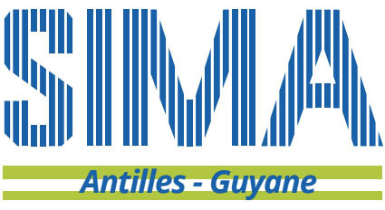

Mon stage a connexion m'as permis de faire connnaissance avec le monde professionnel.
Durant ce stage j'ai :
- Changé des écrans d'ordinareur
- Analysé piece par piece les composants d'un ordinateur défectueux afin d'en régler le problème
- Rangé des cables emméles dans des boites
- Aidé a la soudure d'une carte mère de machine a laver
Ce fut une très bonne expérience dans un millieu que j'aime : l'informatique

Ce stage de première année de BTS SIO fut ma première expérience professionnelle concrète
J'ai pu durant ce stage, développer un site web permettant aux clients de sima antilles guyane d'accéder a leurs factures apres s'etre authentifié par identifiant et mot de passe.
Le développement fut en html,css,javascript,php ainsi que sql server ainsi qu'un script windows
Cette expérience m'as permis de voir la rélatité du travail de développeur, qui est certes difficile mais passionnant
Le site que j'ai développé est actuellement en ligne a cette adresse.
J'ai effectué mon stage de 2e année dans la meme entreprise que pour la 1ere année
Durant ce stage, j'ai finalisé quelques bugs du site de la première année en plus d'améliorer son aspect visuel.
Suite a cela, j'ai entammé le développement d'un module prestashop pour un site e-commerce que l'entreprise veut créer.
Ce module a pour but la gestion automatique des retours en garantie des produits, c'est a dire de vérifier automatiquement si le produit est sous garantie et si oui de le renvoyer vers le prestateur local correspondant.
prestashop tournant sous php symphony, le développement se fut sur le framework php symphony
Cete expérience fut très dépaysante, car sous un framework, tout est encadré, on ne peut pas faire comme bon nous semble et donc on évite le bricolage
Ce fut une bonne expérience puisqu'elle me permit de mieux encadrer et structurer mon code.
Toutefois, le débveloppement n'est pas encore fini car le directeur de l'entreprise m'as solicité pour les grandes vacance afin de finir le développement.
Ce sera donc un vrai travail hors du parcours scolaire et non un stage scolaire.
Expériences professsionnelles
Stage a connexion jarry (3e)
Stage a Sima Antilles Guyane (BTS SIO 1ere annéee)